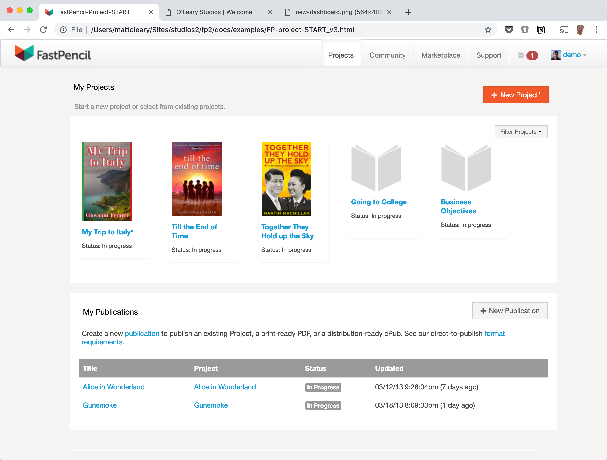

At FastPencil I made a complete overhaul of the online publishing platform in order to improve the user experience and visual design. The added goal was to create a brandable platform that could be licensed to other book sellers who wanted to offer their own self-publishing service.
The new dashboard is easily branded and has a simple and clear choice of actions: the primary being starting a new project while displaying clear access to all of the user's existing projects.
Outcome: Books a Million and On Demand Books have have both licensed the platform. They've each done some branding as expected but the product experience and much of the look-and-feel remains intact. Also Fast Pencil was acquired at this time based on the updated platform offering.
